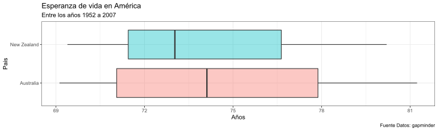
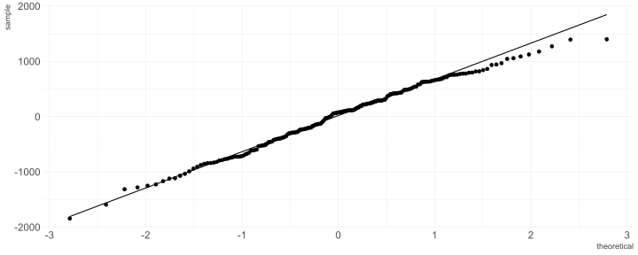
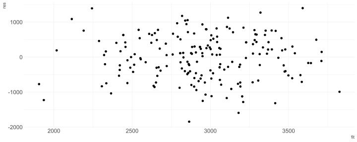

Computación Estadística con R
Clase 3
Rubén Soza
Manejo de bases de datos
Rename: Renombra Columnas
Permite cambiar los nombres de las columnas seleccionadas.
artists <- read_csv("Datasets/artists.csv")
artists## # A tibble: 4 x 2
## name plays
## <chr> <chr>
## 1 George sitar
## 2 John guitar
## 3 Paul bass
## 4 Ringo drumsartists %>% rename(Nombres = name) -> artist2
artist2## # A tibble: 4 x 2
## Nombres plays
## <chr> <chr>
## 1 George sitar
## 2 John guitar
## 3 Paul bass
## 4 Ringo drumsjoin(): Junta Bases de Datos
Existen 7 funciones, en dplyr, que permiten juntar/contrastar dos bases de datos, utilizando una columna como link.
Algunos ejemplos son:
inner_join()left_join()right_join()
left_join

left_join: Ejemplo
songs <- read_csv("Datasets/songs.csv")
songs## # A tibble: 4 x 2
## song name
## <chr> <chr>
## 1 Across the Universe John
## 2 Come Together John
## 3 Hello, Goodbye Paul
## 4 Peggy Sue Buddyinner_join y right_join : Ejemplo
artist3 <- inner_join(songs, artists, by = "name")
artist3## # A tibble: 3 x 3
## song name plays
## <chr> <chr> <chr>
## 1 Across the Universe John guitar
## 2 Come Together John guitar
## 3 Hello, Goodbye Paul bassartist4 <- right_join(songs, artists, by = "name")
artist4## # A tibble: 5 x 3
## song name plays
## <chr> <chr> <chr>
## 1 <NA> George sitar
## 2 Across the Universe John guitar
## 3 Come Together John guitar
## 4 Hello, Goodbye Paul bass
## 5 <NA> Ringo drums¿Qué pasa si las columnas ‘link’ poseen nombres diferentes?
left_join(songs,artist2, by = c("name" = "Nombres"))## # A tibble: 4 x 3
## song name plays
## <chr> <chr> <chr>
## 1 Across the Universe John guitar
## 2 Come Together John guitar
## 3 Hello, Goodbye Paul bass
## 4 Peggy Sue Buddy <NA>Veamos un ejemplo en R
Datos de Tuberculosis
library(tidyverse)
data("table4a")
kable(table4a)| country | 1999 | 2000 |
|---|---|---|
| Afghanistan | 745 | 2666 |
| Brazil | 37737 | 80488 |
| China | 212258 | 213766 |
data("table2")
kable(table2)| country | year | type | count |
|---|---|---|---|
| Afghanistan | 1999 | cases | 745 |
| Afghanistan | 1999 | population | 19987071 |
| Afghanistan | 2000 | cases | 2666 |
| Afghanistan | 2000 | population | 20595360 |
| Brazil | 1999 | cases | 37737 |
| Brazil | 1999 | population | 172006362 |
| Brazil | 2000 | cases | 80488 |
| Brazil | 2000 | population | 174504898 |
| China | 1999 | cases | 212258 |
| China | 1999 | population | 1272915272 |
| China | 2000 | cases | 213766 |
| China | 2000 | population | 1280428583 |
cases <- read_csv("Datasets/cases.csv")
kable(cases)| country | 2011 | 2012 | 2013 |
|---|---|---|---|
| FR | 7000 | 6900 | 7000 |
| DE | 5800 | 6000 | 6200 |
| US | 15000 | 14000 | 13000 |
¿Como obtendríamos el promedio por país?
¿Como obtendríamos el promedio por país?
cases %>%
mutate(promedio = (`2011` + `2012` + `2013`)/3) -> Promedios
kable(Promedios)| country | 2011 | 2012 | 2013 | promedio |
|---|---|---|---|---|
| FR | 7000 | 6900 | 7000 | 6966.667 |
| DE | 5800 | 6000 | 6200 | 6000.000 |
| US | 15000 | 14000 | 13000 | 14000.000 |
Ahora pensemos en una tabla más grande, con más años..
gather: Recolectar
Coloca nombres de columnas en una variable (columna) key, recolectando los valores (value) de las columnas en un sola columna

gather: Código
table4ag <- gather(table4a, `1999`, `2000`, key = "year", value = "cases")
kable(table4ag)| country | year | cases |
|---|---|---|
| Afghanistan | 1999 | 745 |
| Brazil | 1999 | 37737 |
| China | 1999 | 212258 |
| Afghanistan | 2000 | 2666 |
| Brazil | 2000 | 80488 |
| China | 2000 | 213766 |
spread: Esparcir
Esparce un par de columnas (2, key-value) en multiples columnas

spread: Código
table2s <- spread(table2, type, count)
kable(table2s)| country | year | cases | population |
|---|---|---|---|
| Afghanistan | 1999 | 745 | 19987071 |
| Afghanistan | 2000 | 2666 | 20595360 |
| Brazil | 1999 | 37737 | 172006362 |
| Brazil | 2000 | 80488 | 174504898 |
| China | 1999 | 212258 | 1272915272 |
| China | 2000 | 213766 | 1280428583 |
Veamos un ejemplo en R
Visualización de datos
Estructura
- ¿Por que?
- Definiciones
- Recomendaciones Técnicas & Visuales
- Ejercicios y concursos
¿Por que visualización?

Definición técnica (Posible)
Representación gráfica de datos codificando la información como: posición, tamaño, formas, colores

Algunos gráficos

Cosas importantes sobre visualización de datos:
- Lleva información, es un mensaje
- Ejercicio mental para interpretar o decodificar(!!) información
- No siempre es el fin
- Herramienta exploratoria
- Distintas visualizaciones en mismos datos / Distintas historias


Ejercicio
¿Existe el mejor gráfico? ¿Cuál de las siguientes formas funciona mejor con el título?
La región del sur exhibe el mayor crecimiento
Adapatado del tweet de Lisa Charlotte Rost que a su vez está viene del ejemplo del libro “Show me the numbers” de Stephen Few
Los datos:
| region | Q1 | Q2 | Q3 | Q4 |
|---|---|---|---|---|
| sur | 100 | 150 | 225 | 290 |
| norte | 150 | 160 | 180 | 300 |
| este | 180 | 200 | 200 | 240 |
| oeste | 250 | 250 | 300 | 170 |
Opción #1
Opción #2

(Posible) Respuesta
No. Dependerá de tu mensaje, de tu historia.
Visualizando con ggplot2
ggplot2
Características:
- Paquete para visualizar datos mediante capas
- Es muy poderoso y flexible
- Se carga junto al
tidyverse - No es la única opción en R para graficar
Datos
theme_set(theme_gray())library(gapminder)
data(gapminder)
paises <- gapminder %>%
filter(year == max(year))
paises## # A tibble: 142 x 6
## country continent year lifeExp pop gdpPercap
## <fct> <fct> <int> <dbl> <int> <dbl>
## 1 Afghanistan Asia 2007 43.8 31889923 975.
## 2 Albania Europe 2007 76.4 3600523 5937.
## 3 Algeria Africa 2007 72.3 33333216 6223.
## 4 Angola Africa 2007 42.7 12420476 4797.
## 5 Argentina Americas 2007 75.3 40301927 12779.
## 6 Australia Oceania 2007 81.2 20434176 34435.
## 7 Austria Europe 2007 79.8 8199783 36126.
## 8 Bahrain Asia 2007 75.6 708573 29796.
## 9 Bangladesh Asia 2007 64.1 150448339 1391.
## 10 Belgium Europe 2007 79.4 10392226 33693.
## # ... with 132 more rowsCreando un gráfico :)
ggplot(data = paises)
Mejorando un gráfico
ggplot(data = paises) +
geom_point(mapping = aes(x = lifeExp, y = gdpPercap))
Que sucedió?
ggplot(data = paises) +
geom_point(mapping = aes(x = lifeExp, y = gdpPercap))ggplot()crea un sistema de coordenadas al cual se pueden agregar capasggplot(data = paises)da un grafico vacío pues no agregamos capasgeom_point()agrega una capa de puntos al gráfico usando las filas depaises- Cada función
geom_algotiene un argumento de mapping que define cómo se asignan o se “mapean” las variables del conjunto de datos a propiedades visuales delgeom_algo - El argumento de mapping siempre aparece emparejado con
aes(), y los argumentosxeyespecifican qué variables asignar a los ejesxey
Podemos asignar las propiedades estéticas de tu geom manualmente:
ggplot(data = paises) +
geom_point(mapping = aes(x = lifeExp, y = gdpPercap), color = "blue")
En este caso un punto no solo puede poseer x e y, puede tener tamaño dado por una variable
ggplot(data = paises) +
geom_point(mapping = aes(x = lifeExp, y = gdpPercap, size = pop), color = "blue")Quizás en lugar de setear color fijo, podemos asignarlo segun una variable
ggplot(data = paises) +
geom_point(mapping = aes(x = lifeExp, y = gdpPercap, size = pop, color = continent))O cambiar el estilo o temática del gráfico
ggplot(data = paises) +
geom_point(mapping = aes(x = lifeExp, y = gdpPercap, size = pop, color = continent)) +
theme_light()
O realizar facets/paneles
ggplot(data = paises) +
geom_point(mapping = aes(x = lifeExp, y = gdpPercap, size = pop)) +
theme_light() + facet_wrap(vars(continent))
Otros tipos de gráficos: Boxplot
Oceania <- gapminder %>%
filter(continent=="Oceania")
ggplot(data = Oceania , aes(x = country, y = lifeExp, fill = country)) +
geom_boxplot(alpha=0.4) + theme_bw(base_size=10) +
theme(legend.position = "none") + labs(x = "Pais", y = "Años",
title = "Esperanza de vida en América",
subtitle = "Entre los años 1952 a 2007",
caption = "Fuente Datos: gapminder") +
coord_flip() #cambia los ejes coordenados
Otros tipos de gráficos: Barras
cabu<- gapminder %>% filter(country %in% c("Chile","Argentina",
"Brazil","Uruguay"),
year %in% c("2002","2007"))
p <- cabu %>%
ggplot(aes(country, gdpPercap,fill=factor(year))) + theme_bw(base_size=16) +
theme(axis.text.x = element_text(size=12))+ labs(x = "Pais", y = "gdp",
title = "GDP per capita",
caption = "Fuente Datos: gapminder") +
scale_fill_manual(name = "Año",values=c("#E74C3C","grey30")) +
geom_bar(stat = "identity",position = "dodge")p
Paquete Útil: GGTHEMEASSIST
Para editar algunas características de los gráficos, se puede utilizar el adicional proveniente del paquete ggThemeAssist. Para ello:
- Instalar el paquete.
- Seleccionar el código completo que genera el gráfico.
- Hacer click en Addins > ggplot Theme Assistant.
- Editar todo lo deseado.
Gráficos en la misma ventana: Rmisc
Generamos 3 gráficos diferentes:
Ang <- gapminder %>%
filter(country == 'Angola')
p1<- ggplot(data = Ang) +
geom_line(mapping = aes(x = year, y = gdpPercap))+
ggtitle("gdpPercap")
p2<- ggplot(data = Ang) +
geom_line(mapping = aes(x = year, y = lifeExp))+
ggtitle("lifeExp")
p3<- ggplot(data = Ang) +
geom_line(mapping = aes(x = year, y = pop))+
ggtitle("pop")library(Rmisc)
multiplot(p1, p2, p3, cols=1)
Ahora poniéndolo todo junto:
ggplot(data = Ang) +
geom_line(mapping = aes(x = year, y = scale(gdpPercap),colour = "gdpPercap"))+
geom_line(mapping = aes(x = year, y = scale(lifeExp),colour = "lifeExp"))+
geom_line(mapping = aes(x = year, y = scale(pop),colour = "pop"))+
ylab('')